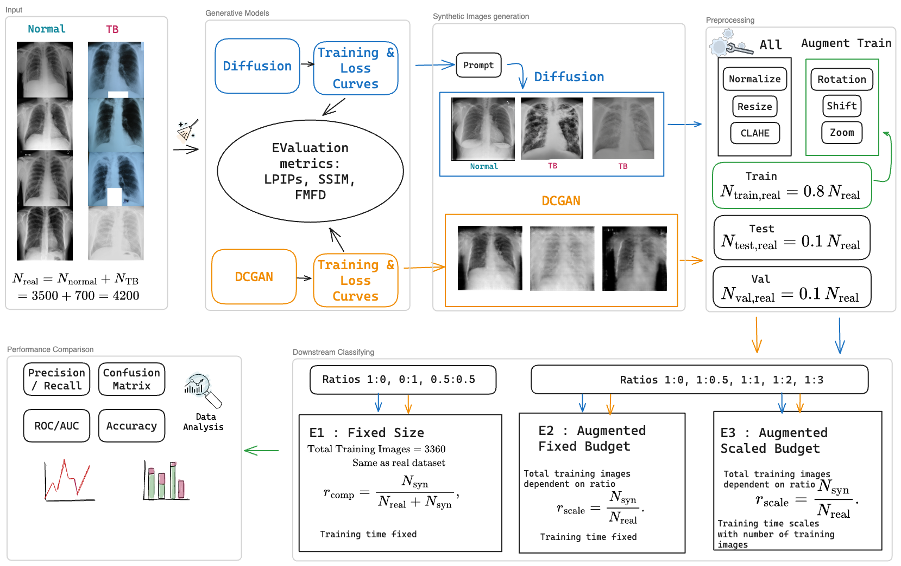
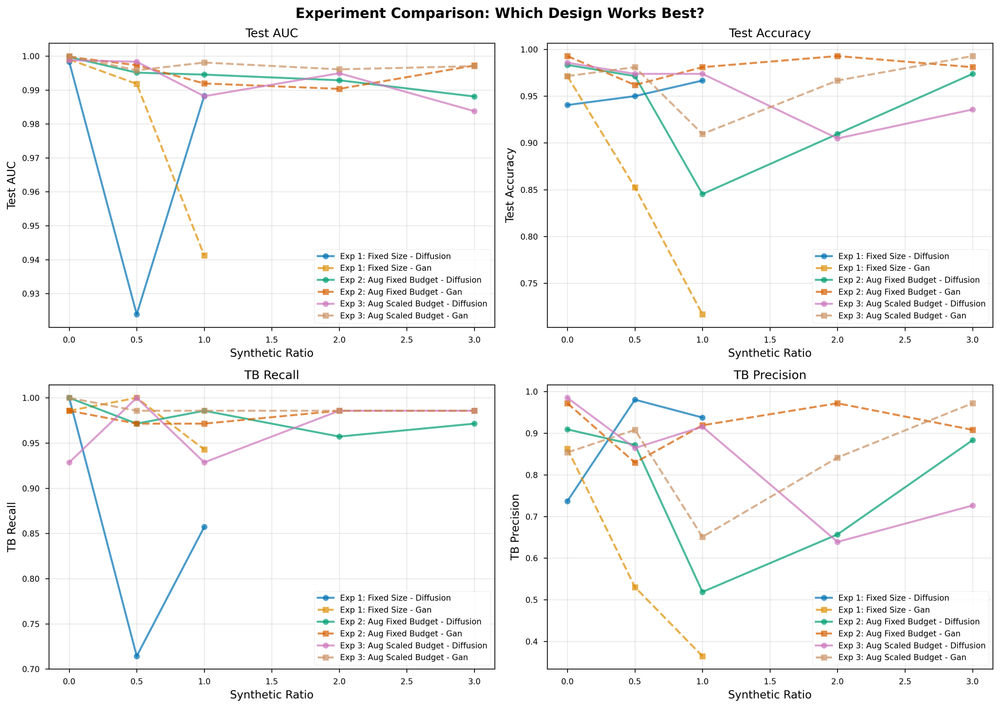

Abstract
Synthetic data augmentation is often proposed as a remedy for limited and imbalanced medical imaging datasets. We study tuberculosis detection on the Tuberculosis Chest X-ray Database by training a 256×256 WGAN-GP and a 512×512 latent diffusion model fine-tuned from RoentGen-v2. We evaluated both for image quality and downstream utility. On generative metrics, diffusion outperforms WGAN-GP, achieving lower FID (6.56 vs. 9.28) and substantially lower radiology-aligned Rad-Dino FID (117.89 vs. 201.78), along with higher SSIM/MS-SSIM under our deterministic gen–real pairing protocol. However, in controlled DenseNet-121 classifier experiments under a fixed optimization budget (4,000 steps with identical selection criteria), synthetic augmentation does not outperform a count-matched duplicate-real control at matched dataset size. The duplicate-real control yields the best downstream performance despite adding no new information (e.g., 0.9981 ± 0.0013 test AUPRC at r = 5), while the best synthetic setting is diffusion at low ratio (r = 0.25). Increasing the synthetic-to-real ratio is not beneficial: high synthetic proportions degrade downstream performance, with particularly sharp deterioration for WGAN-GP at large ratios. Overall, the study demonstrates that superiority on generative metrics does not guarantee downstream benefit and highlights the importance of rigorous, count-matched augmentation controls when claiming gains from synthetic data.
Experimental Design

4,200 real X-rays (3,500 normal, 700 TB) plus synthetic images feed three designs: fixed size (E1), augmented fixed budget (E2), and augmented scaled budget (E3). Every arm is compared against a control that duplicates real images up to the same count, so any gain from synthetic data has to come from new variety rather than from simply having more samples.
Results

Test AUC, accuracy, TB recall and TB precision as the synthetic share grows, for each design and generator. Neither generator beats the duplicate-real control. The best synthetic setting is diffusion at a low ratio (0.25 synthetic images per real one), and larger synthetic shares make things worse, especially with WGAN-GP.
BibTeX
@InProceedings{pmlr-v318-pink26a,
title = {Disentangling dataset size from synthetic diversity in tuberculosis chest X-ray classification},
author = {Pink, Connor and Sykes, Ed},
booktitle = {Proceedings of the 39th Canadian Conference on Artificial Intelligence},
pages = {954--961},
year = {2026},
editor = {Bouzar-Benlabiod, Lydia and Leung, Carson},
volume = {318},
series = {Proceedings of Machine Learning Research},
publisher = {PMLR},
url = {https://proceedings.mlr.press/v318/pink26a.html}
}